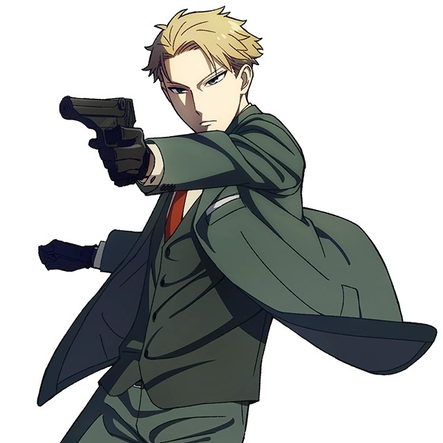

Hi, I'm Loid Forger!

Formerly known as "Twilight," once the most skilled spy in
Westalis,
but now I've traded my covert missions for code and algorithms.
After years of undercover work, I decided to retire from the world
of espionage and pursue something with a bit less... danger.
Programming seemed like a natural fit—problem-solving,
adapting to challenges, and, of course, keeping a sharp mind!